Baskin-Robbins Korea배스킨라빈스 코리아
LE SSERAFIM × Baskin-Robbins르세라핌 × 배스킨라빈스
Casting as strategy — an artist chosen for what her work already means.캐스팅이 곧 전략. 도달률이 아니라 이미 가진 의미로 고른 아티스트.
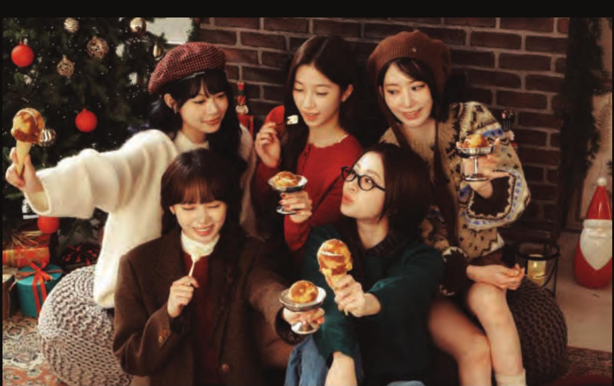
- Client클라이언트
- Baskin-Robbins Korea배스킨라빈스 코리아
- Location장소
- Seoul, Korea서울
- Year연도
- 20252025
- Role역할
- Creative Marketing Team Lead크리에이티브 마케팅 팀장
- Scope범위
- Campaign concept, concept boards, styling direction, photography art direction캠페인 컨셉, 컨셉보드, 스타일링 디렉션, 화보 아트디렉션
The casting. Casting as strategy: an artist chosen for what her work already means, not for reach.
The idea. LE SSERAFIM’s catalogue rests on one claim, that you are already enough. So the artist’s own line became the brand’s, turned outward: I’m good enough to you’re good enough.
What I did. Three concept directions, Sporty & Healthy, Sweet Winter Salon and Romantic Holiday, carried through member-by-member styling to the shoot. The low-sugar line launched under Fearlessly, Eat Lessly.
캐스팅. 캐스팅이 곧 전략. 도달률이 아니라 이미 가진 의미로 고른 아티스트.
아이디어. 르세라핌의 음악은 하나를 말합니다. 너는 이미 충분하다는 것. 그래서 아티스트의 문장을 브랜드의 문장으로 뒤집었습니다. I’m good enough에서 You’re good enough로.
한 일. Sporty & Healthy, Sweet Winter Salon, Romantic Holiday. 컨셉 3안을 멤버별 스타일링까지 끌고 가 촬영으로 연결했고, 저당 라인은 Fearlessly, Eat Lessly로 런칭했습니다.
Art direction and concept development by Ahran Won. Artist imagery © Baskin-Robbins Korea and the respective rights holders.아트디렉션·컨셉 원아란. 아티스트 이미지 © 배스킨라빈스 코리아 및 각 권리자.
Concept컨셉
Fearlessly, Eat LesslyFearlessly, Eat Lessly
The low-sugar Lessly line, its key visual and concept boards.저당 라인 레슬리의 키 비주얼과 컨셉보드.
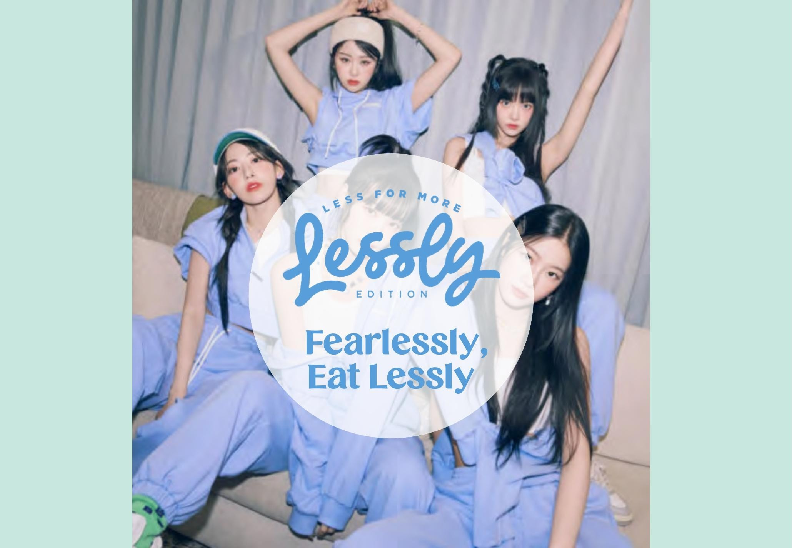
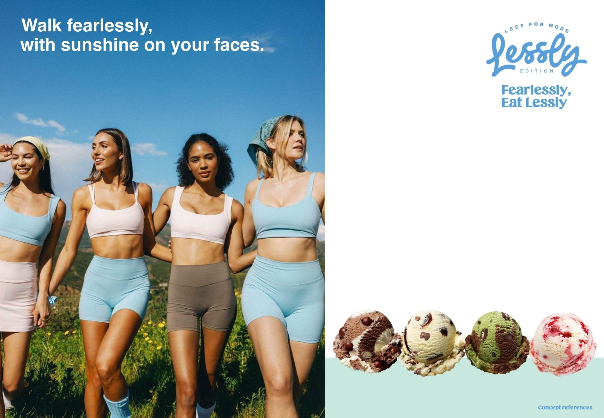
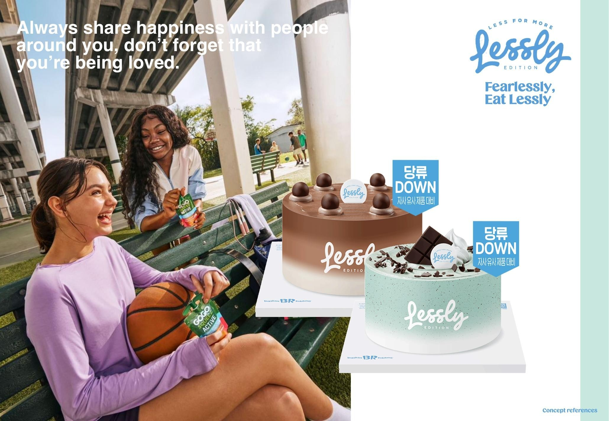
Product제품
Sugar down당류 다운
The Lessly cakes, cups and scoops.레슬리 케이크, 컵, 스쿱.
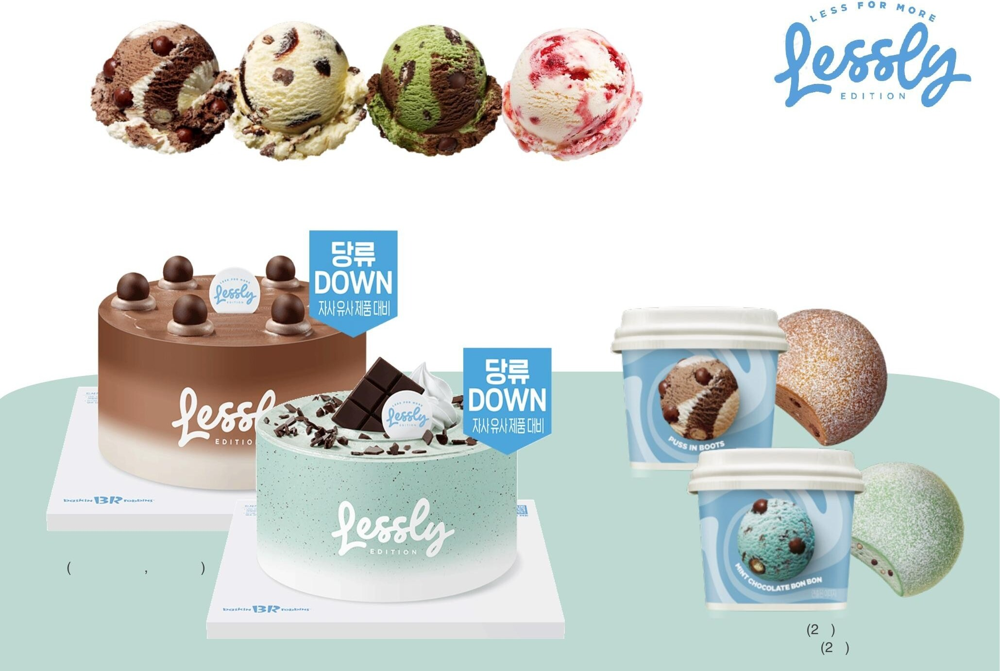
Campaign캠페인
Three directions, on set세 가지 방향, 촬영으로
A tennis court, a winter café and a Christmas table, through to the cake pre-order poster.테니스 코트, 겨울 카페, 크리스마스 식탁, 그리고 케이크 사전 예약 포스터까지.
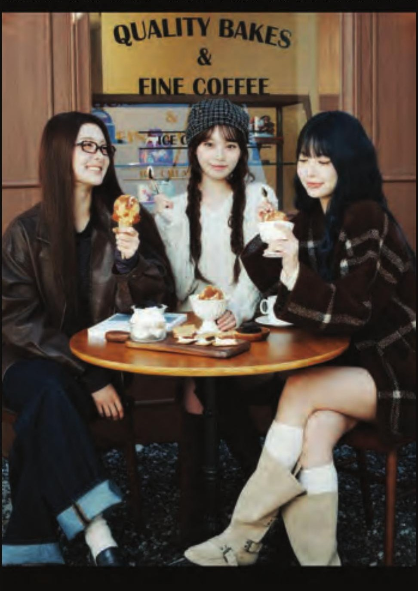
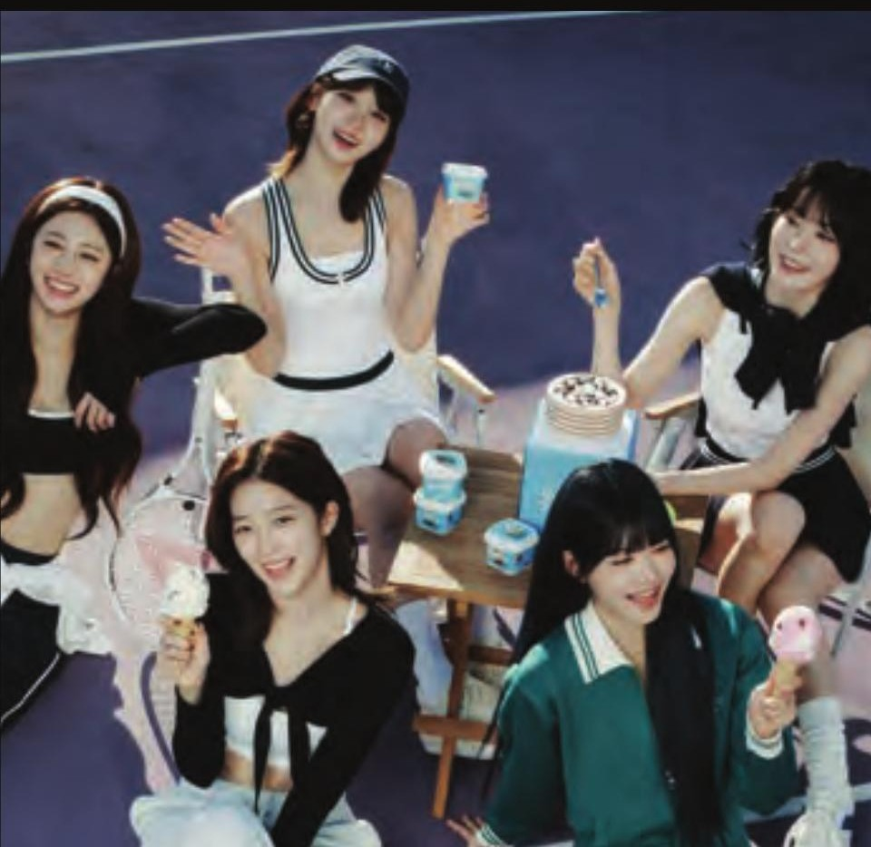
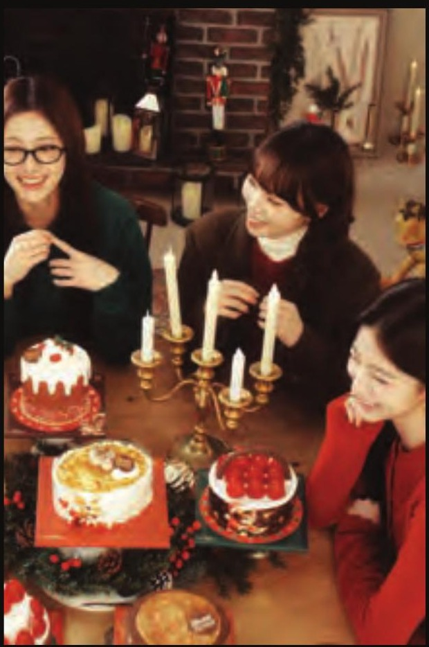
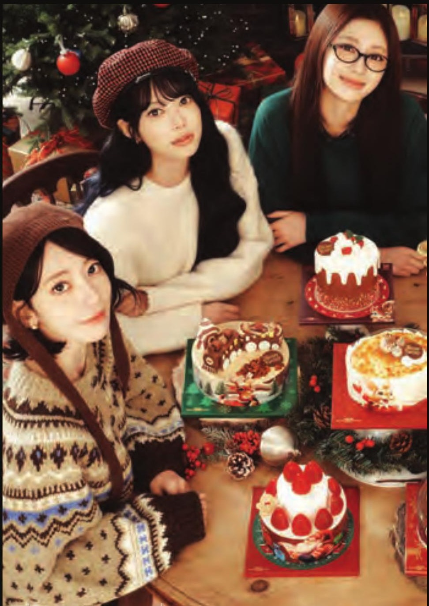
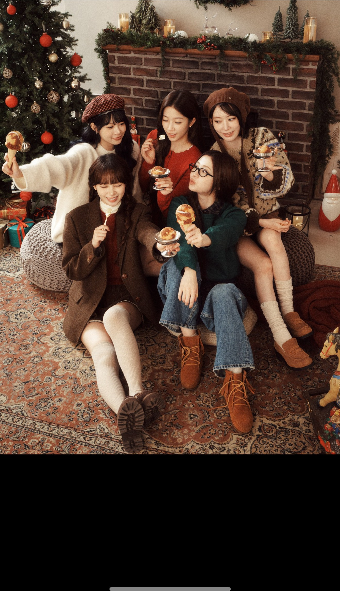
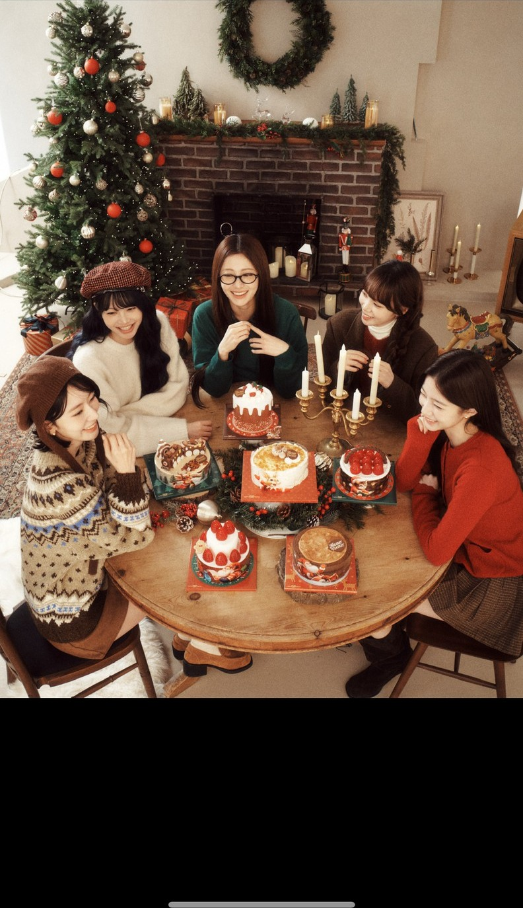
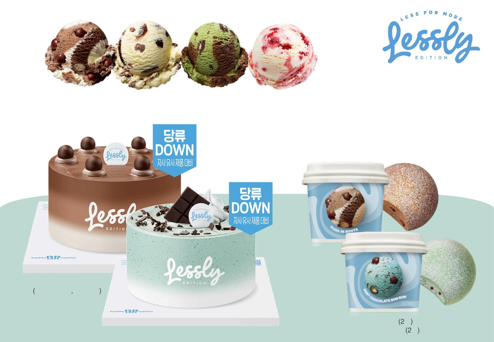